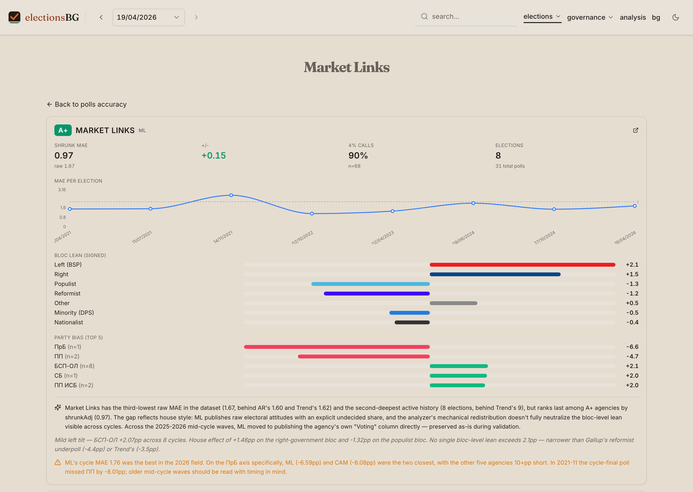
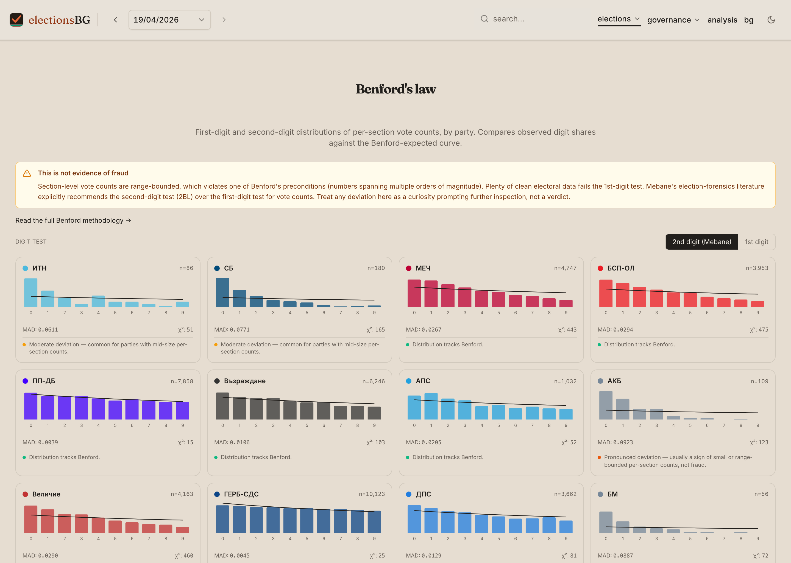
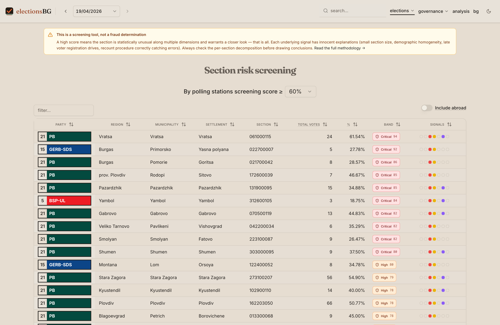
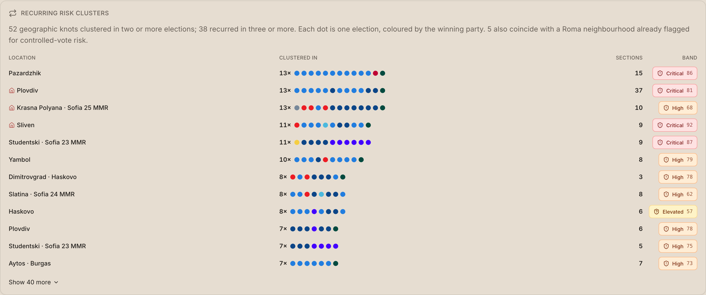
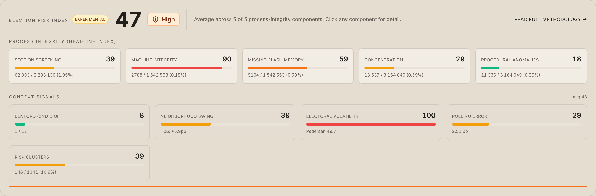
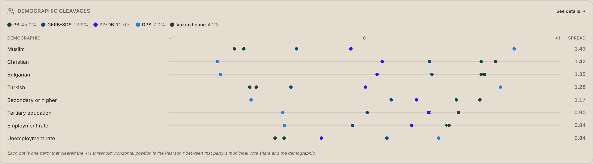
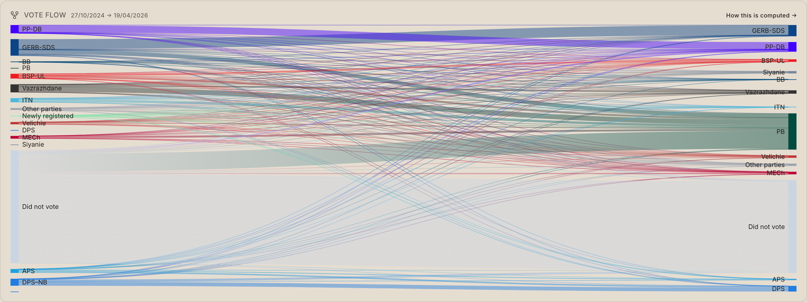

electionsbg.com · Bulgarian parliamentary elections since 2005
How to read this
Seven methods, one principle
Every figure on electionsbg.com is a published, reproducible computation over official Central Election Commission (CIK) data — no black boxes, no editorial scoring. This briefing documents the seven statistical methods that are distinctive to the site, and how each one is built.
Each section states what a method measures, how it works in full detail, and ends with a worked example using real figures from the April 2026 election. None of these methods is a fraud determination — they are screening and description tools, and the site is explicit about that on every page.
Method
What it produces
1. Polling-accuracy analyzer
A shrinkage-corrected, industry-bias-adjusted accuracy leaderboard for every polling agency
2. Benford digit screen
First- and second-digit distribution tests on per-section vote counts
3. Section risk screening
A 0–100 statistical-anomaly score for every polling section
4. Risk-cluster persistence
Geographic clusters of flagged sections, and the same knots tracked across every election since 2005
5. Composite risk index
One election-level process-integrity headline (0–100), in two tracks
6. Demographics-by-party
Per-party correlations between municipal vote share and census indicators
7. Vote-flow estimation
An estimated voter-transition matrix between two consecutive elections
Method 1
Polling-Accuracy Analyzer
How close each agency's final pre-election poll came to the official result — measured across every parliamentary cycle since 2021, and corrected so a single lucky or unlucky cycle cannot distort the ranking.
/polls — the agency leaderboard, with the “How accuracy is calculated” methodology rendered inline on the same page.
How it works
Matching. For each election, the agency's last poll before election day (its “final wave”) is selected. Each polled party share is matched to its official CIK result through a name-alias table that absorbs coalition renames and splits.
MAE — Mean Absolute Error. The average of |polled − actual| across all named parties, in percentage points. This is the base accuracy number; lower is better.
Residual redistribution (genre-gated). Many Bulgarian agencies publish “raw attitudes” that still contain an undecided / won't-say share. Before scoring, that residual is redistributed proportionally across the named parties so the poll sums to 100% like the official result. Agencies that already publish a finished forecast are scored as-is, so the undecided share is never double-counted.
Industry-bias-adjusted MAE. For every party the cross-agency mean error is computed and subtracted, so an agency is not penalised for a miss the whole industry shared — e.g. all seven agencies underestimated the 2026 winner by roughly 10 pp. This isolates agency-specific skill from a sector-wide blind spot.
Bayesian shrinkage. A single cycle is statistically noisy, so each agency's MAE is pulled toward the cross-agency average using k = 4 “pseudo-elections” — the exact formula is below. An agency with 4 tracked cycles sits halfway between its own number and the field average; with only 1 cycle it is 80% pulled to the mean.
Plus / minus vs. consensus. Whether the agency lands closer to the result than the cross-agency consensus.
4% barrier-call rate. How reliably it places each party on the correct side of the 4% parliamentary threshold.
House effect. A per-party and per-bloc signed bias — the agency's systematic lean toward or against each party.
Composite grade (A+…). Shrunk adjusted MAE, plus/minus and barrier calls combined into one letter grade.
The exact formula
The leaderboard score is built in three steps:
MAE = mean of | poll − result | over the named parties
adjusted MAE = the same average, on errors with the cross-agency
mean error per party removed
score = ( n · adjusted MAE + k · field mean ) / ( n + k ), k = 4
The shrunk adjusted MAE is the number that ranks the leaderboard — lower is better. n is the agency's count of tracked elections; the next page plugs in Market Links' numbers.
Method 1 — a worked example
An agency scorecard: Market Links
Method 1 applied to a single agency — the Market Links page on the site, from the May 2026 data refresh, covering eight elections (April 2021 → April 2026).

/polls/ML — an agency page: headline scores, MAE-per-election trend, signed bloc lean, and per-party bias.
Grade
A+
composite
Shrunk MAE
0.97
raw 1.67
Plus / minus
+0.15
vs. consensus
4% calls
90%
n = 68
Elections
8
31 total polls
2026 cycle MAE
1.76
lowest in the field
The formula, with Market Links' numbers
shrunk adjusted MAE = ( n · adjusted MAE + k · field mean ) / ( n + k )
= ( 8 × 1.06 + 4 × 0.78 ) / ( 8 + 4 )
= 11.60 / 12 ≈ 0.97
Across its 8 tracked elections Market Links' raw MAE is 1.67. Removing the error the whole industry shared brings the adjusted MAE to 1.06; shrinking that toward the 0.78 cross-agency field mean (k = 4) yields the 0.97 leaderboard score in the tile above.
Reading the numbers
3rd-lowest raw MAE all-time (1.67) — behind only Alpha Research and Trend, across the second-deepest track record on the site (8 cycles).
Lowest cycle error in 2026 — cycle MAE 1.76, ahead of every competitor; on the decisive winner axis, one of only two agencies within 7 pp while the rest were 10 pp+ short.
Bloc lean — a mild left tilt: Left/BSP +2.1 pp, Right +1.5 pp, Populist −1.3 pp, Reformist −1.2 pp. No single bloc lean exceeds 2.1 pp.
A scoring nuance — shrunk-adjusted MAE 0.97 ranks last among the A+ agencies. This is an artefact of the redistribution step, not a quality verdict: the agency publishes raw attitudes with an explicit undecided share, so the mechanical redistribution does not fully neutralise its house style. Raw accuracy is the cleaner read.
Method 2
Benford's Law Digit Screen
A forensic-statistics screen that checks whether the leading digits of per-section vote counts follow the Benford-expected curve — presented with the caveat built into the method itself.

/benford — per-party small multiples; the page defaults to the 2nd-digit test and leads with a “not evidence of fraud” banner.
How it works
Per-party digit collection. For each party, the vote count from every polling section is collected into one array.
First-digit test (1BL). The observed share of counts beginning with digit d is compared to the Benford expectation log₁₀(1 + 1/d) for d = 1…9.
Second-digit test (2BL). Mebane's preferred election-forensics variant: the expected probability that the second digit equals d is Σk=1..9 log₁₀(1 + 1/(10k+d)). The site defaults to 2BL because it is the more applicable test for electoral data.
Chi-squared statistic. Total deviation of observed from expected; an approximate p-value is derived through the Wilson–Hilferty cube-root transformation (no heavyweight stats dependency needed).
Mean Absolute Deviation (MAD). Nigrini's intuitive “how far off” metric is reported alongside chi-squared, because chi-squared grows with sample size while MAD does not — so MAD is the figure that can be compared fairly across parties of very different sizes.
Worked example — ПрБ, April 2026
ПрБ's vote count was read in 11,930 sections. Its second digits sit very close to the Benford curve — digit 0 appears 12.5% of the time (expected 12.0%); digit 9, 7.0% (expected 8.5%):
chi-squared = 68.0 → p < 0.001 ( would “reject” Benford )
MAD = 0.0055 → average deviation of 0.55 pp per digit
The p-value looks alarming — but chi-squared grows with sample size, and 11,930 sections is a very large sample. The tiny MAD of 0.0055 shows the distribution actually tracks Benford almost exactly. This is precisely why MAD is read alongside chi-squared.
The honesty built into the method
Section-level vote counts are range-bounded — they do not span multiple orders of magnitude — which violates one of Benford's preconditions. Perfectly clean electoral data routinely “fails” the first-digit test. The page therefore leads with a caveat banner, defaults to the more-appropriate 2BL test, and lists parties in fixed ballot order — never sorted by deviation — so no party is implicitly branded “most suspicious.” A deviation is a look-closer cue, never a verdict.
Method 3
Section-Level Risk Screening Score
A single 0–100 score per polling section that flags sections statistically unusual along several independent dimensions at once — a prioritisation tool for “where to look first,” not a fraud claim.

/risk-score — every section scored and banded; the coloured dots decompose the score into its component signals.
How it works — seven weighted signals
Each signal is normalised to a 0–1 scale (with a saturation cap) and assigned a weight: recount delta (0.20) — vote churn when a section was recounted; flash-memory / SUEMG mismatch (0.20) — disagreement between the voting machine's flash-drive file and the paper protocol; invalid-ballot share (0.15); additional-voters share (0.15) — voters added to the roll on election day; vote concentration (0.15) — fires when the top party took 80%+; the peer-outlier z-score (0.15); and the cross-election swing z-score (0.15) — the two comparison signals, detailed below.
The two comparison signals, in detail
This signal asks a deliberately local question: did this section behave differently from its immediate neighbours? Sections are grouped by settlement (the EKATTE code — the same village or town). Within each settlement, the mean and standard deviation of two metrics are computed — voter turnout and the winner's vote share — and for every section a z-score is calculated:
z = ( section value − settlement mean ) / settlement standard deviation
A z-score of 2 means the section sits two standard deviations from its neighbours; the signal takes the larger of the turnout-z and the winner-share-z. A settlement needs at least 3 sections for a baseline, and the z-score is capped at 4σ. Comparing against immediate neighbours rather than a national average isolates genuine local oddities instead of re-flagging the rural–urban gap.
The cross-election swing signal applies the same logic across time: each section is matched to its prior-election counterpart by ID, and the upward shift in turnout and winner-share is z-scored nationally (capped at 4σ). Ratios are compared, not raw counts, so it survives section renumbering; only an upward move is flagged. It is the “corporate vote” fingerprint — a section that once split its vote now delivering a lopsided result at high turnout.
A small 24-vote section. Only three of the seven signals had data — and all three fired near their caps:
additional voters 46.6% of the roll → normalised 1.00 (capped)
invalid ballots 27.6% of paper ballots → normalised 0.92
peer-outlier z = 3.6 vs neighbours → normalised 0.90
score = 100 × ( 1.00 + 0.92 + 0.90 ) / 3 ≈ 94 ( critical band )
Partial-data masking at work: the denominator counts only the three signals present, so the section is never deflated for missing machine data. It scores 94.1 on the site. Bands: low <30, elevated <60, high <80, critical ≥80.
Sections flagged by the risk score (Method 3) rarely stand alone — they cluster geographically. This method groups them, then tracks the same knots across every election since 2005 to see which ones recur.

/risk-analysis — the “recurring risk clusters” card; each row is a persistent locus, the coloured dots its winning party in each election.
How it works
Per-election clustering. Within one election, sections that screened elevated-or-above are grouped into clusters: same winning party, centroids within 600 m of each other, joined as connected components, minimum three sections. Sections abroad (oblast 32) are excluded — their IDs are reassigned each cycle.
Persistent loci. Per-election clusters are then linked across elections: any two that share at least two section IDs are joined, again as connected components. The result is a persistent locus — a geographic knot that has clustered in two or more elections.
Section rap sheet. Each individual section also carries its own cross-election history — its risk score and band in every election it appears in — shown on the section page.
Views, not scores. Clusters and loci describe already-published screening output; neither feeds back into the 0–100 score, so there is no circularity. The composite index (Method 5) carries them only as a context signal.
Worked example — Stolipinovo, Plovdiv
The single largest risk cluster in April 2026 is 22 adjacent sections in the Stolipinovo neighbourhood of Plovdiv, all won by ПрБ (high band, peak score 76). It is not new — the same locus has clustered in 13 of the elections on record, across 37 distinct sections over time, peaking at a critical-band 80.9 in November 2021. The winner, however, keeps changing hands:
2005–2014 ДПС — four consecutive cycles
2017 ДОСТ
2021 ГЕРБ-СДС (Apr), then ДПС (Jul, Nov)
2022–2023 ДПС
2024 ГЕРБ-СДС — both cycles
2026 ПрБ — the brand-new winner
The bloc result is constant — a lopsided cluster every cycle — but the beneficiary rotates. That is the broker-managed-turnout fingerprint: the cluster behaves as a transferable bloc, not a loyal electorate.
The same screening discipline
A recurring cluster is a “look here every cycle” cue, never a verdict. 34 of this locus's 37 sections also fall inside a documented neighbourhood with distinctive turnout dynamics — so the recurrence reflects a real, mapped community, not a finding of wrongdoing. Each locus links straight to its member sections so the reader can inspect the protocols.
Method 5
Composite Election Risk Index
One election-level 0–100 headline that summarises process-integrity signals — deliberately built in two separated tracks so that statistical or forecast noise can never inflate the integrity number.

/risk-analysis — the five-component integrity headline, with the context signals shown separately beneath it.
How it works — two tracks
Integrity track (the headline). Five signals, each vote-weighted onto a common denominator (national turnout, or total machine votes) so they are directly comparable, then averaged into the 0–100 score:
Section screening — share of the national vote sitting in flagged sections, with band weights (critical ×1.0, high ×0.5, elevated ×0.2).
Machine integrity — total |flash-drive − protocol| disagreement as a percent of machine votes.
Missing flash memory — machine votes in sections that ran machines but submitted no flash drive, and so cannot be audited end-to-end.
Geographic concentration — top-party votes inside settlements where one party took 80%+.
Procedural anomalies — invalid plus additional voters in flagged settlements.
Context track (shown, never folded into the headline). Five signals that can legitimately light up in a perfectly clean election:
Benford 2BL deviation rate — from Method 2; fails by construction on range-bounded data.
Risk-neighbourhood excess swing — the top party's swing inside eight tracked communities minus its national swing over the same cycles. The subtraction isolates the community-specific part (the broker-managed-turnout fingerprint of Stokes et al., 2013) from a country-wide trend.
Pedersen electoral volatility — 0.5 × Σ|Δ party vote share| between consecutive elections; the standard comparative-politics measure of how much the vote moved between parties (~5 pp = stable; Bulgaria's 2021–22 cycles hit ~40+).
Polling error — the mean agency MAE for the election (Method 1).
Spatial risk clusters — from Method 4; the share of mapped flagged sections that fall into a geographic cluster. In the context track because those sections are already counted by integrity component 1.
The exact formula
integrity score = mean of the five vote-weighted integrity components
April 2026: ( 39 + 90 + 59 + 29 + 18 ) / 5 = 47 ( band: High )
Each component is itself a vote-weighted percentage capped onto a 0–100 scale. The five context-track signals are displayed beside the headline but are never averaged into it — so a Benford “failure” or a bad polling year cannot inflate the integrity number.
Method 6
Demographics-by-Party Correlations
A measure of how strongly each party's municipal vote share tracks each demographic group — computed directly off the official 2021 National Census.

Home dashboard, the “Demographic cleavages” tile — each dot is one party's correlation (r) with a demographic; the spread column ranks the sharpest divides.
How it works
Inputs. The official 2021 census supplies 14 indicators for each of Bulgaria's ~265 municipalities (obshtini): ethnicity (Bulgarian / Turkish / Roma), religion, education levels, age bands, and employment / activity / unemployment rates.
Pearson correlation (r). For each party, the correlation coefficient is computed between two arrays measured across the ~265 municipalities: the party's vote share in the municipality, and the demographic indicator's value there.
Reading r. The coefficient runs from −1 to +1. +1 — the party scores higher exactly where the group is larger; −1 — the exact opposite; 0 — no linear relationship.
Cleavage aggregate. Demographic indicators are ranked by spread = max(r) − min(r) across the major parties — surfacing which demographic divides the electorate most sharply.
The correlation runs at municipality grain, not the 28 oblasts, by design: Census 2021 publishes the ethnocultural, education and employment dimensions down to the municipality, so the finer grain costs no demographic resolution — while a ~10× larger sample (n = 265) turns suggestive relationships into statistically solid ones.
Worked example — ДПС, April 2026
Across the 265 municipalities, ДПС's vote share tracks the ethnoreligious map closely:
r = +0.77 with the Muslim population share
r = +0.69 with the ethnic-Turkish share
r = −0.73 with the ethnic-Bulgarian share
The ecological-fallacy caveat. r = +0.77 means ДПС polls strongly in Muslim-heavy municipalities — it is not a claim that 77% of Muslim voters chose ДПС. The correlation describes places, not individuals; that is the boundary at which it must hand off to individual-level survey data.
Method 7
Vote-Flow (Voter-Transition) Estimation
An estimate of how voters moved between two consecutive elections — a party-to-party transition matrix, produced by a constrained ecological-inference pipeline rather than an eyeballed “swing.”

Home dashboard, the “Vote flow” tile — the estimated voter-transition Sankey between the two most recent elections.
How it works
Goodman ecological regression, per oblast. For each section the from-cycle and to-cycle vote shares are known. For each destination party j, a coefficient vector βj is fit so that the to-cycle share ≈ (from-cycle shares) · βj across all sections. βj[i] estimates the fraction of party-i voters who moved to party j.
Non-negative least squares (NNLS). The fit is constrained so transfer fractions cannot go negative — a voter fraction below zero is meaningless.
Section weighting. Sections are weighted by √(registered voters), so larger sections — which carry less sampling noise — dominate the fit. This is weighted least squares.
RAS / biproportional scaling. The raw coefficient matrix will not exactly reproduce the published totals, so it is iteratively rescaled — rows then columns, repeatedly — until its row sums equal the from-cycle party totals and its column sums equal the to-cycle totals exactly. The estimate is thereby forced to be consistent with the official results.
Worked example — ГЕРБ-СДС, Oct 2024 → Apr 2026
ГЕРБ-СДС won 628,190 votes in October 2024. The estimated transition matrix splits that row of voters as:
stayed with ГЕРБ-СДС 374,412 ( 59.6% )
moved to ПрБ 147,934 ( 23.5% )
did not vote 28,706 ( 4.6% )
other parties 77,138 ( 12.3% )
The row sums back to 628,190 exactly — RAS scaling forces it. The headline finding: nearly a quarter of ГЕРБ-СДС's 2024 voters, about 148,000 people, moved to the brand-new winner ПрБ.
In summary
Common principles
The seven methods differ in subject — pollsters, digits, sections, recurring geographic clusters, whole elections, demographics, voter flows — but share a common discipline.
Screening, not verdicts
Every anomaly method is explicitly framed as a prompt to look closer, never as proof of wrongdoing. Risk pages carry a banner saying so; the Benford page leads with one.
Vote-weighted for comparability
Composite signals are expressed on a shared denominator — national turnout, or total machine votes — so that signals of different kinds can be averaged honestly into one number.
Honest about uncertainty
The caveat is built into the method, not bolted on: range-bounding in Benford, the ecological fallacy in the demographic and vote-flow correlations, partial-data masking in the risk score, Bayesian shrinkage in the polling leaderboard.
Reproducible
Every figure is computed from official CIK data by open-source code, and the methodology is printed on each page of the site itself — the reader can always trace a number back to its inputs.